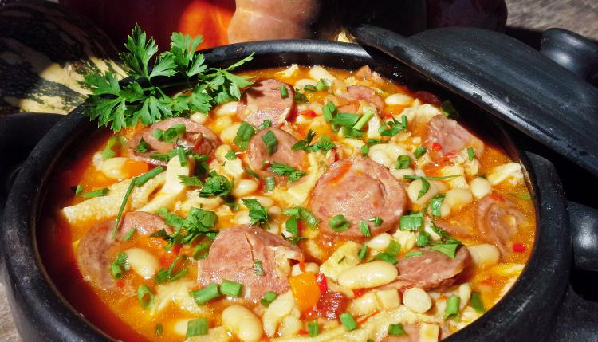

Tripas

Portuguese Language
Ingredientes:
- 1 Kg. Tripas/ Dobrada
- 500 gr. carne de vaca
- Costelinhas de porco
- Entremeada de porco (de preferência salgada)
- Chouriço de vinho, chouriço de colorau e morcela
- Cenoura, cebola, alho, cominhos, colorau, piri-piri, tomate maduro ou polpa de tomate, loureiro, sal e vinho branco.
- +/-1kg Feijão branco, Arroz
- 4 ovos cozidos picados
- 3 dentes de alho picados
- Sal a gosto
- Cheiro-verde a gosto
- Azeite a gosto
- Azeitonas a gosto
Modo de Preparo
- Comece por cozer as tripas em água temperada com sal e 2 folhas de loureiro;
- Num tacho grande pique uma cebola grande e um dente alho, junte azeite e leve a refogar, junte a carne de vaca partida aos bocados e um pouco de vinho,
deixe estufar lentamente, acrescentando água aos poucos. Junte a entremeada e as costelinhas para que também cozam e coloque o tomate maduro ou polpa de tomate;
- Junte a cenoura partida às rodelas, os chouriços e deixar estufar;
- Quando as carnes estiverem cozidas junte as tripas partidas e a morcela, aqui tempere com sal, piri-piri, junte +/- 1 colher de sopa cominhos e outra de colorau;
- Deixe estufar um pouco para as tripas tomarem paladar, de seguida junte o feijão já cozido (se cozer o feijão aproveite a água da cozedura para a calda), deixe
apurar em lume brando, rectifique os temperos e já está. Enfeite com salsa;
- Faça um arroz de alho "seco" para acompanhar, que se prepara assim:
Top of the page
Return to main page